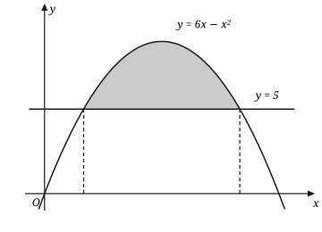
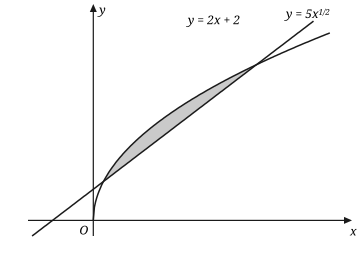

<script src="/assets/redirect.js"></script>
<section class="theory" data-section="P1-9.7">
<h2>9.7 Area bounded by a curve and a line or by two curves</h2>
<p class="src">Based on Cambridge International AS &amp; A Level Mathematics: Pure Mathematics 1 Coursebook (Sue Pemberton, series editor Julian Gilbey), Chapter 9 Integration, printed pp.260–264. Own wording and new numbers, following the coursebook method of finding intersections and integrating the upper graph minus the lower graph.</p>
<p class="key-words"><strong>Key words:</strong> <em>area</em>, <em>points of intersection</em>, <em>definite integral</em></p>
<h3>Upper minus lower</h3>
<p>If \(y=\mathrm{f}(x)\) is above \(y=\mathrm{g}(x)\) for \(a\le x\le b\), the area between them is</p>
<p>\[\text{Area}=\int_a^b\bigl(\mathrm{f}(x)-\mathrm{g}(x)\bigr)\,dx.\]</p>
<p>This works wherever the region is, even below the \(x\)-axis, as long as \(\mathrm{f}\) is the upper graph.</p>
<h3>Method</h3>
<ul><li>Find the <strong>points of intersection</strong> by solving \(\mathrm{f}(x)=\mathrm{g}(x)\); these give the limits.</li><li>Decide which graph is on top, using the diagram or a test value.</li><li>Integrate upper minus lower between the limits. Alternatively, find the area under the upper graph and subtract the area under the lower graph, such as a rectangle or a triangle.</li></ul>
<div class="worked-example">
<h4>Worked example 1: A curve and a line</h4>
<p class="src">Coursebook, 9.7, area between a curve and a line. New numbers.</p>
<p>Find the area enclosed by \(y=x^2\) and \(y=x+2\).</p>
<ol class="steps">
<li>\(x^2=x+2\): \(x=-1\) and \(x=2\) <span class="mark">B1</span></li>
<li>\(\displaystyle\int_{-1}^2(x+2-x^2)\,dx=\Bigl[\dfrac{x^2}{2}+2x-\dfrac{x^3}{3}\Bigr]_{-1}^2\) <span class="mark">M1</span></li>
<li>\(=\dfrac{10}{3}-\Bigl(-\dfrac{7}{6}\Bigr)=\dfrac{9}{2}\) <span class="mark">A1</span></li>
</ol>
<p class="final"><strong>Answer:</strong> \(\dfrac{9}{2}\)</p>
</div>
<div class="worked-example">
<h4>Worked example 2: Two curves</h4>
<p class="src">Coursebook, 9.7, area between two curves. New numbers.</p>
<p>Find the area enclosed by \(y=x^2\) and \(y=8-x^2\).</p>
<ol class="steps">
<li>\(x^2=8-x^2\): \(x=\pm2\) <span class="mark">B1</span></li>
<li>\(\displaystyle\int_{-2}^2(8-2x^2)\,dx=\Bigl[8x-\dfrac{2x^3}{3}\Bigr]_{-2}^2\) <span class="mark">M1</span></li>
<li>\(=\dfrac{32}{3}-\Bigl(-\dfrac{32}{3}\Bigr)=\dfrac{64}{3}\) <span class="mark">A1</span></li>
</ol>
<p class="final"><strong>Answer:</strong> \(\dfrac{64}{3}\)</p>
</div>
<h3>Common mistakes</h3>
<ul><li>Subtracting lower minus upper and getting a negative area.</li><li>Using the \(x\)-intercepts as limits instead of the points of intersection.</li><li>Forgetting to subtract the area under the line (for example the rectangle under \(y=5\)).</li></ul>
<h3>Past paper</h3>
<p class="src">9709/11/M/J/10 Q4, official QP and official MS.</p>
<p></p><p>The diagram shows the curve \(y=6x-x^2\) and the line \(y=5\). Find the area of the shaded region. [6]</p>
<details><summary>Mark scheme</summary>
<ol class="steps">
<li>Meets \(y=5\) when \(x=1\) or \(x=5\) <span class="mark">B1</span> Official MS: B1, co.</li>
<li>Integral \(=3x^2\ldots\) <span class="mark">M1</span> Official MS: M1 A1, attempt to integrate; co.</li>
<li>\(\ldots-\tfrac{1}{3}x^3\) <span class="mark">A1</span> Official MS: A1, integral 3x² − ⅓x³ correct.</li>
<li>Limits 1 to 5 used \(\to30\tfrac{2}{3}\) <span class="mark">M1</span> Official MS: DM1, value at top limit − value at lower limit (dependent on the previous M mark).</li>
<li>Area of rectangle \(=20\) <span class="mark">B1</span> Official MS: B1√ (follow through), co to his x values.</li>
<li>Shaded area \(=10\tfrac{2}{3}\) <span class="mark">A1</span> Official MS: A1, co. (Alternatively integral of 6x − x² − 5: B1, M1, A1, DM1 as above, then '−5x' B1√, A1.)</li>
</ol>
</details>
<h3>Past paper</h3>
<p class="src">9709/12/M/J/22 Q6, official QP and official MS.</p>
<p></p><p>The diagram shows the curve with equation \(y=5x^{\frac{1}{2}}\) and the line with equation \(y=2x+2\).</p><p>Find the exact area of the shaded region which is bounded by the line and the curve. [5]</p>
<details><summary>Mark scheme</summary>
<ol class="steps">
<li>\(2x+2=5x^{\frac{1}{2}}\) leading to \(2x-5x^{\frac{1}{2}}+2=0\) <span class="mark">M1</span> Official MS: M1, equating line and curve and rearranging so that terms are all on same side; making a valid attempt to solve by factorising, formula or completing the square.</li>
<li>\(x=\tfrac{1}{4}\), \(x=4\) <span class="mark">A1</span> Official MS: A1; SC if M1 not scored, SC B1 available for correct answers.</li>
<li>Area \(=\displaystyle\int\Bigl(5x^{\frac{1}{2}}-(2x+2)\Bigr)dx\) <span class="mark">M1</span> Official MS: *M1, intention to integrate and subtract areas; condone missing brackets and/or subtraction wrong way around.</li>
<li>\(\Bigl[\dfrac{10}{3}x^{\frac{3}{2}}-x^2-2x\Bigr]_{\frac{1}{4}}^4=\Bigl(\dfrac{10}{3}\times8-16-8\Bigr)-\Bigl(\dfrac{10}{3}\times\dfrac{1}{8}-\dfrac{1}{16}-\dfrac{1}{2}\Bigr)\) <span class="mark">M1</span> Official MS: DM1, integrating (kx^(3/2) seen) and substituting their points of intersection.</li>
<li>\(\dfrac{45}{16}\) <span class="mark">A1</span> Official MS: A1 OE exact answer; 2 13/16 or 2.8125; condone −45/16 if corrected to 45/16.</li>
</ol>
</details>
<div class="quick-check">
<h4>Quick check 1</h4>
<p>Find the area enclosed by \(y=5-(x-1)(x-5)\) and \(y=5\).</p>
<details><summary>Worked solution</summary>
<ol class="steps"><li>Limits 1 and 5</li><li>\(\displaystyle\int_1^5(6x-x^2-5)\,dx\)</li></ol>
<p class="final"><strong>Answer:</strong> \(\dfrac{32}{3}=10.7\) (3 s.f.)</p>
</details>
</div>
<div class="quick-check">
<h4>Quick check 2</h4>
<p>Find the area enclosed by \(y=x^2\) and \(y=3x\).</p>
<details><summary>Worked solution</summary>
<ol class="steps"><li>Limits 0 and 3</li><li>\(\Bigl[\dfrac{3x^2}{2}-\dfrac{x^3}{3}\Bigr]_0^3=\dfrac{27}{2}-9\)</li></ol>
<p class="final"><strong>Answer:</strong> \(4.5\)</p>
</details>
</div>
<div class="quick-check">
<h4>Quick check 3</h4>
<p>Find the area enclosed by \(y=2x^2\) and \(y=4-2x^2\).</p>
<details><summary>Worked solution</summary>
<ol class="steps"><li>Limits \(\pm1\)</li><li>\(\displaystyle\int_{-1}^1(4-4x^2)\,dx\)</li></ol>
<p class="final"><strong>Answer:</strong> \(\dfrac{16}{3}=5.33\) (3 s.f.)</p>
</details>
</div>
</section>
